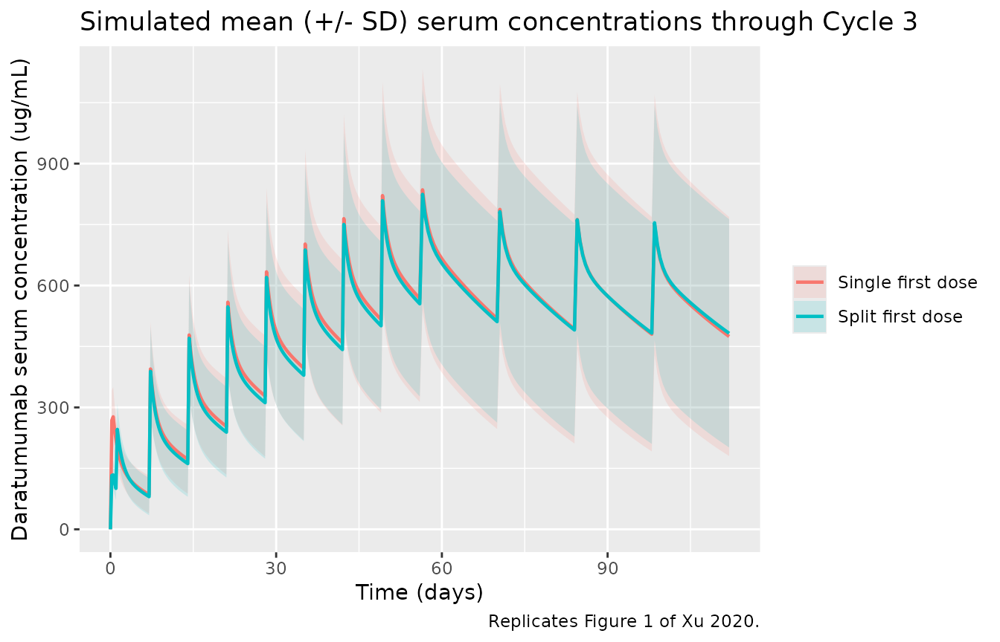
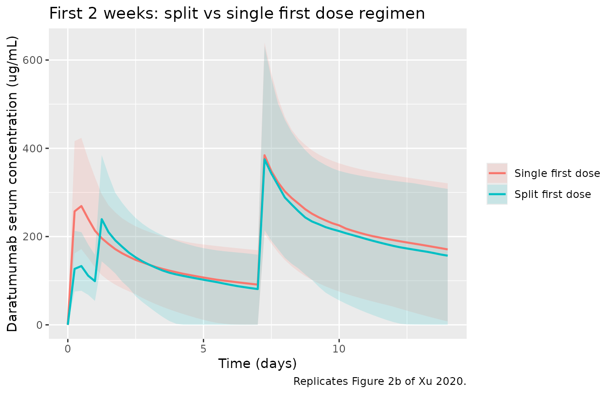
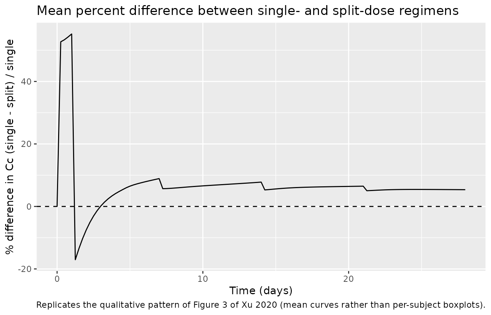

Model and source
- Citation: Xu XS, Moreau P, Usmani SZ, et al. Split First Dose Administration of Intravenous Daratumumab for the Treatment of Multiple Myeloma (MM): Clinical and Population Pharmacokinetic Analyses. Adv Ther. 2020;37(4):1464-1478. doi:10.1007/s12325-020-01247-8
- Description: Two-compartment population PK model for intravenous daratumumab (anti-CD38 IgG1k) in adults with multiple myeloma, with parallel linear and Michaelis-Menten eliminations from the central compartment. The maximum velocity of the saturable (target-mediated) elimination decays mono-exponentially from its baseline value at first-order rate KDES, mimicking depletion of the CD38 target over weekly 16 mg/kg therapy (Xu 2020 MMY1001 D-Kd / D-KRd cohorts).
- Article: https://doi.org/10.1007/s12325-020-01247-8
- Supplement (Online Resources 1-6, including the final-model parameter table): https://doi.org/10.1007/s12325-020-01247-8 (electronic supplementary material).
The model is a two-compartment IV population PK structure with parallel linear and Michaelis-Menten eliminations from the central compartment. The maximum velocity of the saturable (target-mediated) elimination decays mono-exponentially from its baseline value at first-order rate KDES, mimicking depletion of the CD38 target over weekly 16 mg/kg therapy. The structural form follows the established daratumumab population-PK parameterisation; Xu 2020 re-fit the parameters using the MMY1001 D-Kd (n=85) and D-KRd (n=22) cohorts.
Population
The PK-evaluable population comprised 107 patients with multiple myeloma from the phase 1b MMY1001 study (ClinicalTrials.gov NCT01998971): the D-Kd cohort (daratumumab + carfilzomib + dexamethasone, n=85, relapsed/refractory MM with 1-3 prior lines of therapy) and the D-KRd cohort (daratumumab + carfilzomib + lenalidomide + dexamethasone, n=22, newly diagnosed MM). The D-Kd cohort was older (median 66 years, range 38-85) than the D-KRd cohort (median 60 years, range 34-74); sex was balanced (~54% male in both cohorts); the population was 80-86% White; median body weight was 70.0 kg (D-Kd) and 79.9 kg (D-KRd); ECOG performance status was 0 or 1 in approximately 92% of D-Kd and 95% of D-KRd patients (Xu 2020 Table 1).
All patients received 16 mg/kg IV daratumumab weekly for Cycles 1-2 (28-day cycles), every 2 weeks for Cycles 3-6, and every 4 weeks thereafter. The first dose was administered either as a single 16-mg/kg infusion on Cycle 1 Day 1 (D-Kd, n=10) or as two 8-mg/kg infusions on Cycle 1 Days 1 and 2 (D-Kd n=75, D-KRd n=22). The median durations of the first, second, and subsequent intravenous infusions of daratumumab in MMY1001 were 7.0, 4.3, and 3.4 h, respectively.
The same metadata is available programmatically via
readModelDb("Xu_2020_daratumumab")$population.
Source trace
The per-parameter origin is recorded as an in-file comment next to
each ini() entry in
inst/modeldb/specificDrugs/Xu_2020_daratumumab.R. The table
below collects the equation and parameter origins in one place.
| Equation / parameter | Value | Source location |
|---|---|---|
lcl (CL) |
0.00485 L/hour | Online Resource 6: CL, RSE 10% |
lvc (V1) |
4.09 L | Online Resource 6: V1, RSE 3.5% |
lq (Q) |
0.0642 L/hour | Online Resource 6: Q, RSE 8.0% |
lvp (V2) |
3.06 L | Online Resource 6: V2, RSE 9.7% |
lvmax (Vmax baseline) |
2.08 mg/hour | Online Resource 6: Vmax, RSE 16.7% |
lkdes (1st-order Vmax decay) |
0.0013 1/hour | Online Resource 6: KDES, RSE 17.8% |
lkm (Km, fixed) |
0.93 ug/mL | Online Resource 6: KM, fixed |
e_wt_cl |
0.451 | Online Resource 6: WT on CL, RSE 50.1% |
e_alb_cl |
-1.149 | Online Resource 6: serum albumin on CL, RSE 27.2% |
e_igg_cl |
0.806 | Online Resource 6: Type of MM (IgG vs non-IgG) on CL, RSE 29.8% |
e_wt_vc |
0.375 | Online Resource 6: WT on V1, RSE 38.1% |
e_sexf_vc |
-0.205 | Online Resource 6: Sex on V1, RSE 22.2% |
| omega(CL) | 40.7% CV | Online Resource 6, RSE 10.4% |
| omega(V1) | 21.8% CV | Online Resource 6, RSE 10.3% |
| omega(Vmax) | 71.3% CV | Online Resource 6, RSE 23.8% |
| omega(KDES) | 43.4% CV | Online Resource 6, RSE 45.6% |
| Residual error (proportional) | 13.8% CV | Online Resource 6: additive on log-scale |
d/dt(central), d/dt(peripheral1)
|
n/a | Main text Methods (Population PK Analysis) + Online Resource 6 footnote equations |
| TVCL = 0.00485 * (WT/78.6)^0.451 * (ALB/37.0)^-1.149 * TPMMCL | n/a | Online Resource 6 footnote |
| TVV1 = 4.09 * (WT/78.6)^0.375 * SEXV1 | n/a | Online Resource 6 footnote |
| Reference WT, ALB | 78.6 kg, 37.0 g/L | Online Resource 6 footnote |
Virtual cohort
Individual MMY1001 patient covariate values are not publicly available. The virtual cohort below approximates the published Cohort demographics in Xu 2020 Table 1: ~46% female, ~80% White, median body weight 78.6 kg (consistent with the model’s reference weight), median baseline albumin 37 g/L (model reference). Approximately 60% of patients with multiple myeloma have IgG-secreting disease in published RRMM cohorts (Fau 2020 Table S2 reports 55% IgG MM); we use 55% IgG MM here so the simulation reflects a clinically typical mix.
set.seed(20260514L)
n_per_arm <- 100L
make_cohort <- function(n, regimen, dose_schedule, id_offset = 0L) {
ids <- id_offset + seq_len(n)
cov_df <- tibble(
id = ids,
# Median 72 kg approximates the pooled D-Kd / D-KRd median across cohorts
# (D-Kd 70.0 kg; D-KRd 79.9 kg), with a clipped SD of 15 kg spanning the
# full Xu 2020 Table 1 range of 45-160.8 kg.
WT = pmax(45, pmin(160, rnorm(n, mean = 72, sd = 15))),
ALB = pmax(25, pmin(50, rnorm(n, mean = 37, sd = 4))),
SEXF = as.integer(runif(n) < 0.458),
# 55% IgG MM => MM_NIGG = 0; 45% non-IgG MM => MM_NIGG = 1.
MM_NIGG = as.integer(runif(n) > 0.55),
regimen = regimen
)
dose_df <- dose_schedule(ids) |>
left_join(cov_df, by = "id") |>
mutate(amt = 16 * WT * dose_fraction)
obs_grid <- tidyr::expand_grid(
id = ids,
# 6-hourly through the weekly dosing phase, 12-hourly to end of follow-up.
time = sort(unique(c(seq(0, 8 * 7 * 24, by = 6),
seq(8 * 7 * 24, 28 * 7 * 24, by = 12))))
) |>
left_join(cov_df, by = "id") |>
mutate(evid = 0L, amt = 0, cmt = "central", dur = 0)
dose_rows <- dose_df |>
transmute(id, time, amt, evid = 1L, cmt = "central", dur,
WT, ALB, SEXF, MM_NIGG, regimen)
bind_rows(dose_rows, obs_grid |> select(names(dose_rows))) |>
arrange(id, time, desc(evid))
}
# MMY1001 calendar: 28-day cycles. Weekly dosing during Cycles 1-2 (days 0,
# 7, 14, 21, 28, 35, 42, 49); every 2 weeks during Cycles 3-6 (days 56, 70,
# 84, 98, 112, 126, 140, 154); every 4 weeks thereafter.
# Single first dose regimen: 16 mg/kg infusion on C1D1 (7h),
# then weekly for Cycles 1-2 (4.3h second infusion, 3.4h thereafter),
# Q2W for Cycles 3-6, Q4W after.
single_schedule <- function(ids) {
qw_times <- (0:7) * 7 * 24 # days 0, 7, ..., 49 (Cycles 1-2)
q2w_times <- 56 * 24 + 14 * 24 * (0:7) # days 56, 70, ..., 154 (Cycles 3-6)
q4w_times <- max(q2w_times) + 28 * 24 * (1:6)
all_times <- c(qw_times, q2w_times, q4w_times)
durations <- c(7.0, # first infusion
4.3, # second infusion
rep(3.4, length(all_times) - 2L))
tidyr::expand_grid(id = ids, time_idx = seq_along(all_times)) |>
mutate(time = all_times[time_idx],
dur = durations[time_idx],
dose_fraction = 1) |>
select(-time_idx)
}
# Split first dose regimen: 8 mg/kg on C1D1 (7h) and C1D2 (4.3h),
# then 16 mg/kg weekly through C2D last dose, then Q2W, then Q4W.
split_schedule <- function(ids) {
qw_times <- c(0, 24, (1:7) * 7 * 24) # split first + days 7-49
q2w_times <- 56 * 24 + 14 * 24 * (0:7)
q4w_times <- max(q2w_times) + 28 * 24 * (1:6)
all_times <- c(qw_times, q2w_times, q4w_times)
doses <- c(0.5, 0.5, rep(1, length(all_times) - 2L))
durations <- c(7.0, 4.3, rep(3.4, length(all_times) - 2L))
tidyr::expand_grid(id = ids, time_idx = seq_along(all_times)) |>
mutate(time = all_times[time_idx],
dur = durations[time_idx],
dose_fraction = doses[time_idx]) |>
select(-time_idx)
}
events <- bind_rows(
make_cohort(n_per_arm, "Single first dose", single_schedule, id_offset = 0L),
make_cohort(n_per_arm, "Split first dose", split_schedule, id_offset = n_per_arm)
)
stopifnot(!anyDuplicated(unique(events[, c("id", "time", "evid")])))Simulation
mod <- readModelDb("Xu_2020_daratumumab")
sim <- rxode2::rxSolve(
mod,
events = events,
keep = c("regimen", "WT", "ALB", "SEXF", "MM_NIGG"),
addDosing = FALSE
) |> as.data.frame()
#> ℹ parameter labels from comments will be replaced by 'label()'For deterministic typical-value replications (no between-subject variability), zero out the random effects:
mod_typ <- mod |> rxode2::zeroRe()
#> ℹ parameter labels from comments will be replaced by 'label()'
typ_events <- events |> filter(id %in% c(1L, n_per_arm + 1L))
sim_typ <- rxode2::rxSolve(mod_typ, events = typ_events,
keep = c("regimen", "WT", "ALB", "SEXF", "MM_NIGG")) |>
as.data.frame()
#> ℹ omega/sigma items treated as zero: 'etalcl', 'etalvc', 'etalvmax', 'etalkdes'
#> Warning: multi-subject simulation without without 'omega'Replicate published figures
Figure 1 – mean daratumumab serum concentrations
The published Figure 1 compares mean (+/- SD) daratumumab serum concentrations between the single first dose and split first dose cohorts of MMY1001 during the first 4 cycles of therapy. Below is the simulated analogue using the virtual cohort.
fig1_window_hr <- 16 * 7 * 24 # 16 weeks (~ Cycles 1-4 of 28-day cycles)
sim_fig1 <- sim |>
filter(time <= fig1_window_hr, !is.na(Cc))
sim_fig1 |>
group_by(regimen, time) |>
summarise(
Cc_mean = mean(Cc),
Cc_sd = sd(Cc),
.groups = "drop"
) |>
ggplot(aes(time / 24, Cc_mean, colour = regimen, fill = regimen)) +
geom_ribbon(aes(ymin = pmax(0, Cc_mean - Cc_sd), ymax = Cc_mean + Cc_sd),
alpha = 0.15, colour = NA) +
geom_line(linewidth = 0.8) +
labs(x = "Time (days)", y = "Daratumumab serum concentration (ug/mL)",
colour = NULL, fill = NULL,
title = "Simulated mean (+/- SD) serum concentrations through Cycle 3",
caption = "Replicates Figure 1 of Xu 2020.")
Figure 2b – difference between regimens during the first 2 weeks
Xu 2020 Figure 2b zooms into the first 2 weeks where the split- and single-first dose regimens differ. After the second split-dose infusion on Cycle 1 Day 2, the two regimens converge.
sim |>
filter(time <= 14 * 24, !is.na(Cc)) |>
group_by(regimen, time) |>
summarise(
Cc_p50 = median(Cc),
Cc_p025 = quantile(Cc, 0.025),
Cc_p975 = quantile(Cc, 0.975),
.groups = "drop"
) |>
ggplot(aes(time / 24, Cc_p50, colour = regimen, fill = regimen)) +
geom_ribbon(aes(ymin = Cc_p025, ymax = Cc_p975), alpha = 0.15, colour = NA) +
geom_line(linewidth = 0.8) +
labs(x = "Time (days)", y = "Daratumumab serum concentration (ug/mL)",
colour = NULL, fill = NULL,
title = "First 2 weeks: split vs single first dose regimen",
caption = "Replicates Figure 2b of Xu 2020.")
Figure 3 – percent difference in concentration converges to <1%
Xu 2020 Figure 3 reports that the percent difference between the simulated single- and split-dose concentrations falls below 1% for most patients by Week 4. The simulated percent difference is computed below using the regimen-mean trajectories.
pct_diff <- sim |>
filter(!is.na(Cc), time <= 28 * 24) |>
group_by(regimen, time) |>
summarise(Cc_mean = mean(Cc), .groups = "drop") |>
pivot_wider(names_from = regimen, values_from = Cc_mean) |>
mutate(pct = 100 * (`Single first dose` - `Split first dose`) /
pmax(`Single first dose`, 1e-3))
ggplot(pct_diff, aes(time / 24, pct)) +
geom_hline(yintercept = 0, linetype = 2) +
geom_line() +
labs(x = "Time (days)", y = "% difference in Cc (single - split) / single",
title = "Mean percent difference between single- and split-dose regimens",
caption = "Replicates the qualitative pattern of Figure 3 of Xu 2020 (mean curves rather than per-subject boxplots).")
PKNCA validation
Daratumumab is administered as multiple-hour IV infusions; PKNCA AUC and Cmax are reported here for the first dose interval (single 16 mg/kg infusion on Cycle 1 Day 1) of the single-first-dose regimen, where the parallel-elimination behaviour and target-mediated saturation are most informative.
sim_first_cycle <- sim |>
filter(regimen == "Single first dose", !is.na(Cc),
time >= 0, time <= 7 * 24) |>
select(id, time, Cc, regimen)
dose_first_cycle <- events |>
filter(regimen == "Single first dose", evid == 1, time == 0) |>
select(id, time, amt, regimen)
conc_obj <- PKNCA::PKNCAconc(
sim_first_cycle,
Cc ~ time | regimen + id,
concu = "ug/mL", timeu = "hour"
)
dose_obj <- PKNCA::PKNCAdose(
dose_first_cycle,
amt ~ time | regimen + id,
doseu = "mg"
)
intervals <- data.frame(
start = 0,
end = 7 * 24,
cmax = TRUE,
tmax = TRUE,
auclast = TRUE,
cmin = TRUE
)
nca_res <- PKNCA::pk.nca(PKNCA::PKNCAdata(conc_obj, dose_obj, intervals = intervals))
nca_tbl <- as.data.frame(nca_res$result)
knitr::kable(
nca_tbl |>
group_by(PPTESTCD) |>
summarise(
median = median(PPORRES, na.rm = TRUE),
Q05 = quantile(PPORRES, 0.05, na.rm = TRUE),
Q95 = quantile(PPORRES, 0.95, na.rm = TRUE),
.groups = "drop"
),
digits = 3,
caption = "Simulated NCA parameters on the first 7-day dose interval (Single first dose regimen, 16 mg/kg)."
)| PPTESTCD | median | Q05 | Q95 |
|---|---|---|---|
| auclast | 23714.020 | 11627.764 | 36208.748 |
| cmax | 269.158 | 175.069 | 400.973 |
| cmin | 0.000 | 0.000 | 0.000 |
| tmax | 12.000 | 6.000 | 12.000 |
Comparison against published concentrations
Xu 2020 Table 2 reports observed median (range) postinfusion concentrations in MMY1001. The simulated medians from the virtual cohort are tabulated below for the same sampling time points.
# MMY1001 calendar (28-day cycles): C1D1 = day 0; C1D2 = day 1; C2D1 = day 28;
# C3D1 = day 56; C4D1 = day 84.
pub <- tibble::tribble(
~timepoint, ~time_hr, ~regimen, ~pub_median, ~pub_low, ~pub_high,
"C1D1 postinfusion", 7.0, "Single first dose", 319.2, 237.5, 394.7,
"C1D1 postinfusion", 7.0, "Split first dose", 156.7, 82.5, 345.0,
"C1D2 postinfusion", 24 + 4.3, "Split first dose", 256.8, 125.8, 435.5,
"C2D1 postinfusion", 28 * 24 + 3.4, "Single first dose", 726.6, 523.1, 911.6,
"C2D1 postinfusion", 28 * 24 + 3.4, "Split first dose", 688.9, 0.0, 1202.4,
"C3D1 preinfusion", 56 * 24 - 0.1, "Single first dose", 463.2, 355.9, 792.9,
"C3D1 preinfusion", 56 * 24 - 0.1, "Split first dose", 639.2, 57.7, 1110.7,
"C4D1 preinfusion", 84 * 24 - 0.1, "Single first dose", 509.1, 291.2, 743.5,
"C4D1 preinfusion", 84 * 24 - 0.1, "Split first dose", 523.0, 92.3, 1019.3
)
approx_id <- function(df, target_hr) {
df |>
group_by(id, regimen) |>
arrange(time) |>
summarise(Cc = approx(time, Cc, xout = target_hr, rule = 2)$y, .groups = "drop")
}
sim_summary <- pub |>
rowwise() |>
mutate(sim_df = list(approx_id(sim |> filter(regimen == .env$regimen), time_hr))) |>
ungroup() |>
mutate(
sim_median = vapply(sim_df, function(d) median(d$Cc, na.rm = TRUE), numeric(1)),
sim_low = vapply(sim_df, function(d) quantile(d$Cc, 0.05, na.rm = TRUE), numeric(1)),
sim_high = vapply(sim_df, function(d) quantile(d$Cc, 0.95, na.rm = TRUE), numeric(1))
) |>
select(-sim_df) |>
mutate(pct_diff = 100 * (sim_median - pub_median) / pub_median)
knitr::kable(
sim_summary,
digits = 1,
caption = "Published (Xu 2020 Table 2) vs simulated median daratumumab concentrations at key MMY1001 sampling time points. The simulation uses a virtual cohort (n = 100 per arm) and is not expected to match patient-by-patient; the published medians are over small per-arm cohorts (D-Kd single dose n = 8-10; split-dose cohorts n = 14-75). Differences within +/- 30 percent indicate the structural model is reproducing the published exposure pattern; the C2D1 postinfusion peak is the most volatile point because it is most sensitive to body weight and to the timing of the second infusion."
)| timepoint | time_hr | regimen | pub_median | pub_low | pub_high | sim_median | sim_low | sim_high | pct_diff |
|---|---|---|---|---|---|---|---|---|---|
| C1D1 postinfusion | 7.0 | Single first dose | 319.2 | 237.5 | 394.7 | 259.7 | 170.5 | 398.3 | -18.6 |
| C1D1 postinfusion | 7.0 | Split first dose | 156.7 | 82.5 | 345.0 | 128.1 | 78.2 | 197.9 | -18.3 |
| C1D2 postinfusion | 28.3 | Split first dose | 256.8 | 125.8 | 435.5 | 199.1 | 131.2 | 298.1 | -22.5 |
| C2D1 postinfusion | 675.4 | Single first dose | 726.6 | 523.1 | 911.6 | 472.9 | 233.2 | 817.6 | -34.9 |
| C2D1 postinfusion | 675.4 | Split first dose | 688.9 | 0.0 | 1202.4 | 474.2 | 225.4 | 753.2 | -31.2 |
| C3D1 preinfusion | 1343.9 | Single first dose | 463.2 | 355.9 | 792.9 | 536.5 | 229.9 | 977.0 | 15.8 |
| C3D1 preinfusion | 1343.9 | Split first dose | 639.2 | 57.7 | 1110.7 | 531.4 | 229.5 | 990.1 | -16.9 |
| C4D1 preinfusion | 2015.9 | Single first dose | 509.1 | 291.2 | 743.5 | 438.8 | 135.5 | 1004.6 | -13.8 |
| C4D1 preinfusion | 2015.9 | Split first dose | 523.0 | 92.3 | 1019.3 | 439.1 | 142.1 | 996.3 | -16.0 |
Assumptions and deviations
- Virtual cohort. Individual patient covariates from the MMY1001 PK-evaluable population are not publicly available. The cohort above draws WT N(72, 15) kg and ALB N(37, 4) g/L, ~46% female, and 55% IgG MM / 45% non-IgG MM. These distributions are consistent with Xu 2020 Table 1 (D-Kd median 70.0 kg; D-KRd median 79.9 kg) and Fau 2020 Table S2 but are not the actual MMY1001 patients.
- Infusion duration. Xu 2020 reports median durations of 7.0 h (first infusion), 4.3 h (second), and 3.4 h (subsequent). The vignette uses those three values; in practice the durations varied between patients and across cycles.
- Time-varying Vmax equation. The supplement defines KDES as the “first-order rate for decrease of Vmax”. This is the only mathematically natural reading of “first-order rate of decrease,” and we encode it as Vmax(t) = Vmax(0) * exp(-KDES * t). The paper credits the structural form to a referenced prior publication (Xu 2020 Methods, reference 25) which is not on disk; the parameter values used here are exclusively from Xu 2020 Online Resource 6.
-
Residual error. Xu 2020 reports “Additive error
term on the log-scale 13.8% CV”. An additive error on the
log-transformed observation in NONMEM is equivalent to a proportional
error in linear space; we encode it as
propSd = 0.138. - Albumin units. The Online Resource 6 footnote uses ALB reference 37.0 without an explicit unit. A value of 37 is consistent with g/L (typical adult median 35-50 g/L); g/dL would yield a reference of ~3.7. The model records ALB in g/L.
-
MM_NIGG reference orientation. The canonical
MM_NIGGcovariate (inst/references/covariate-columns.md) takes 1 = non-IgG MM and 0 = IgG MM, with a recommended reference category of 0 (IgG MM). Xu 2020 parameterises the linear-CL effect with non-IgG MM as the reference and IgG MM as the 80.6% additive shift. The model preserves the canonical column semantics and applies the shift as(1 + e_igg_cl * (1 - MM_NIGG)), faithful to the paper’s Online Resource 6 footnote equationTPMMCL = 1 (non-IgG) or 1+0.806 (IgG). -
Errata. No erratum or correction notice was located
on disk; the source files comprise the main PMC XML plus the docx
supplement. If a later correction adjusts an Online Resource 6 value,
the affected
ini()entry should be updated and the citation extended.